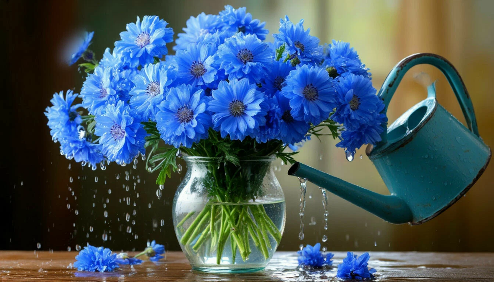
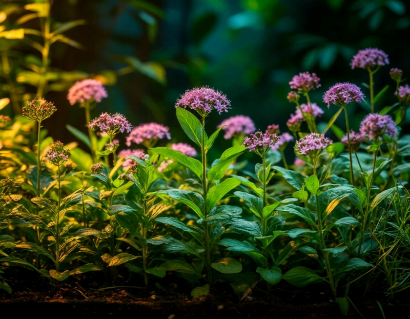

Полив растений
Регулярный полив необходим для здоровья растений. Большинство комнатных растений нуждаются в поливе 1-2 раза в неделю.
Проверяйте влажность почвы перед поливом. Земля должна быть слегка влажной, но не мокрой.
Требования к освещению
Свет критически важен для фотосинтеза. Разные растения требуют разного количества света.
Основные советы
- Не переувлажняйте почву
- Размещайте растения согласно их световым потребностям
- Регулярно протирайте листья от пыли
- Пересаживайте растения раз в год